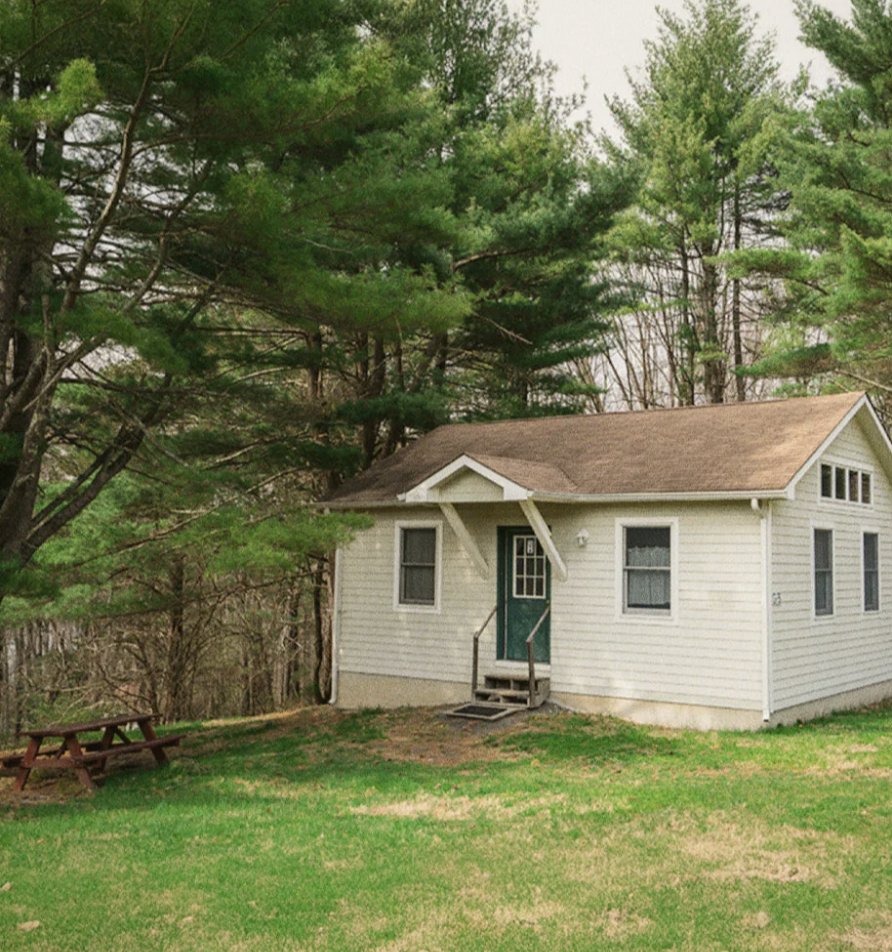

Welcome to...
( __) __ _ (__)
,gg, `-( __) _( )_( )_ (_ ) __)-'
i8""8i ,dPYb, (____) (_ _ _) `-(____)-'@@,
`8,,8' IP'`Yb - - : : - - (_) (__) ,,,. ,@@@@@@/@@,
`88' I8 8I / `-' \ ,&%%&%&&%,@@@@@/@@@@@@
dP"8, I8 8' | ,%&\%&&%&&%,@@@\@@@/@@@
dP' `8a I8 dP ,ggggg, gg gg %&&%&%&/%&&%@@\@@/ /@@@
dP' `Yb I8dP dP" "Y8gggI8 I8 88b %&&%/ %&%%&&@@\ V /@@'
_ ,dP' I8 I8P i8' ,8I I8 I8 8I `&%\ ` /%&' |.|
"888,,____,dP,d8b,_ ,d8, ,d8' ,d8, ,d8, ,8I |o| /\ | |
a8P"Y88888P" 8P'"Y88P"Y8888P" P""Y88P""Y88P" /\|.| //\\ /\
`'. .'`'. .'`'. .'`'. .'`' //\\._\ ///\\ //\\//_
,ggg, ,ggg,_,ggg, `'. .'`'. .'`'. .'`'. . ///\\\ ][ ///\\\
dP""Y8dP""Y88P""Y8b I8 ][ ][
Yb, `88' `88' `88 I8
_( )_ `" 88 88 88 88888888 gg `'. .'`'. .'`'. .'`'. .'`'.
(_(%)_) 88 88 88 I8 ""
(_)\ 88 88 88 ,ggggg, I8 gg ,ggggg, ,ggg,,ggg,
| __ 88 88 88 dP" "Y8gggI8 88 dP" "Y8g8" "8P" "8,
|/_/ 88 88 88 i8' ,8I ,I8, 88 i8' ,8I 8I 8I
| 88 88 Y8,,d8, ,d8',d88b,_,88,_,d8, ,d8' 8I Yb,
| 88 88 `Y8P"Y8888P" 8P""Y88P""Y8P"Y8888P" 8I `Y8
.・。.・゜✭・.・✫・゜・。.
Slow Motion is an intimate, high fidelity, 3-day retreat celebrating music,
dance and 9 years of community at Second Hand Records. It’s an extension of
Musicland, where we can explore beyond the confines of our home in Brooklyn.
╔═*.·:·.✧ ✦ ⋆⋅☆⋅⋆ ✧ ✦✧.·:·.*═╗
╚═*.·:·.✧ ✦ ⋆⋅☆⋅⋆ ✧ ✦✧.·:·.*═╝
｡･ﾟﾟ･｡･ﾟﾟ･｡･ﾟﾟ･｡･ﾟﾟ･｡･ﾟﾟ･｡･ﾟﾟ･｡･ﾟﾟ･｡･ﾟﾟ･｡･ﾟﾟ･｡･ﾟﾟ･｡･ﾟﾟ･｡･ﾟﾟ･｡･ﾟﾟ･｡･ﾟﾟ･｡･ﾟﾟ･｡･ﾟﾟ･｡･ﾟﾟ･｡･ﾟﾟ･｡
Location
｡･ﾟﾟ･｡･ﾟﾟ･｡･ﾟﾟ･｡･ﾟﾟ･｡･ﾟﾟ･｡･ﾟﾟ･｡･ﾟﾟ･｡･ﾟﾟ･｡･ﾟﾟ･｡･ﾟﾟ･｡･ﾟﾟ･｡･ﾟﾟ･｡･ﾟﾟ･｡･ﾟﾟ･｡･ﾟﾟ･｡･ﾟﾟ･｡･ﾟﾟ･｡･ﾟﾟ･｡
Hope Conference & Renewal Center ✨ Blairstown, NJ
15 Ridgeway Ave, Blairstown, NJ 07825
｡･ﾟﾟ･｡･ﾟﾟ･｡･ﾟﾟ･｡･ﾟﾟ･｡･ﾟﾟ･｡･ﾟﾟ･｡･ﾟﾟ･｡･ﾟﾟ･｡･ﾟﾟ･｡･ﾟﾟ･｡･ﾟﾟ･｡･ﾟﾟ･｡･ﾟﾟ･｡･ﾟﾟ･｡･ﾟﾟ･｡･ﾟﾟ･｡･ﾟﾟ･｡･ﾟﾟ･｡
Camp Hope is 90 minutes by car from NYC. Located on 125 acres of idyllic forests and wetlands,
and with its own private trail along Little Silver Lake, we knew we had a special location.
We'll be nestled next to the Delaware Water Gap National Recreation Area and Kittatinny Mountain Ridge,
full of hikes, trails, lookouts, streams and waterfalls.
.・。.・゜✭・.・✫・゜・。.
.・。.・゜✭・.・✫・゜・。.


｡･ﾟﾟ･｡･ﾟﾟ･｡･ﾟﾟ･｡･ﾟﾟ･｡･ﾟﾟ･｡･ﾟﾟ･｡･ﾟﾟ･｡･ﾟﾟ･｡･ﾟﾟ･｡･ﾟﾟ･｡･ﾟﾟ･｡･ﾟﾟ･｡･ﾟﾟ･｡･ﾟﾟ･｡･ﾟﾟ･｡･ﾟﾟ･｡･ﾟﾟ･｡･ﾟﾟ･｡
Camp Map
Click to download!
｡･ﾟﾟ･｡･ﾟﾟ･｡･ﾟﾟ･｡･ﾟﾟ･｡･ﾟﾟ･｡･ﾟﾟ･｡･ﾟﾟ･｡･ﾟﾟ･｡･ﾟﾟ･｡･ﾟﾟ･｡･ﾟﾟ･｡･ﾟﾟ･｡･ﾟﾟ･｡･ﾟﾟ･｡･ﾟﾟ･｡･ﾟﾟ･｡･ﾟﾟ･｡･ﾟﾟ･｡
Lodging
.... .... .... ....
|| || || ||
/"""l|\ /"""l|\ /"""l|\ /"""l|\
/_______\ /_______\ /_______\ /_______\
| .-. |------| .-. |------| .-. |------| .-. |------
__|1|__| |__|2|__| |__|3|__| |__|4|__|
_\ \\__________\ \\__________\ \\__________\ \\_________
------------------------------------------------------------
------------------------------------------------------------
For the best and easiest weekend, you can reserve a bunk in one of our furnished and heated cabins,
with showers and bathrooms inside.
Whether you’re flying solo or want to reserve together with your crew, we’ll make sure you’re taken care of.
Email us at slowmotionweekender@gmail.com with any requests!
Tent camping is not allowed on-site but you can reserve camping spaces in advance at nearby Jenny Jump State Park Camping
｡･ﾟﾟ･｡･ﾟﾟ･｡･ﾟﾟ･｡･ﾟﾟ･｡･ﾟﾟ･｡･ﾟﾟ･｡･ﾟﾟ･｡･ﾟﾟ･｡･ﾟﾟ･｡･ﾟﾟ･｡･ﾟﾟ･｡･ﾟﾟ･｡･ﾟﾟ･｡･ﾟﾟ･｡･ﾟﾟ･｡･ﾟﾟ･｡･ﾟﾟ･｡･ﾟﾟ･｡
Meals
｡･ﾟﾟ･｡･ﾟﾟ･｡･ﾟﾟ･｡･ﾟﾟ･｡･ﾟﾟ･｡･ﾟﾟ･｡･ﾟﾟ･｡･ﾟﾟ･｡･ﾟﾟ･｡･ﾟﾟ･｡･ﾟﾟ･｡･ﾟﾟ･｡･ﾟﾟ･｡･ﾟﾟ･｡･ﾟﾟ･｡･ﾟﾟ･｡･ﾟﾟ･｡･ﾟﾟ･｡
A veg-friendly meal plan for the weekend by [***] can be purchased here.
Email us with any dietary restrictions. Mini menu details will be added over the summer.
.・。.・゜✭・.・✫・゜・。.
If you’d prefer to cook your own food, LIMITED spaces can be reserved in the dining hall kitchen by emailing us.
There’s also a free communal grill (first come). All food must be stored in the dining hall or in an air-tight container / cooler - there are bears!
Rules
｡･ﾟﾟ･｡･ﾟﾟ･｡･ﾟﾟ･｡･ﾟﾟ･｡･ﾟﾟ･｡･ﾟﾟ･｡･ﾟﾟ･｡･ﾟﾟ･｡･ﾟﾟ･｡･ﾟﾟ･｡･ﾟﾟ･｡･ﾟﾟ･｡･ﾟﾟ･｡･ﾟﾟ･｡･ﾟﾟ･｡･ﾟﾟ･｡･ﾟﾟ･｡･ﾟﾟ･｡
Slow Motion is about moving together, with care
Slow Motion is a space that we create together where everyone can feel free and welcome.
Say hi to people you may or may not know, kindness goes a long way!
.・。.・゜✭・.・✫・゜・。.
Leave no trace
Treat Camp Hope like a home and leave it as we found it.
This means respecting the land and cleaning up after yourself. Don’t leave anything around on the grounds or in your cabin after checking out.
.・。.・゜✭・.・✫・゜・。.
Our dance floor
No phones, cameras, video or socials on the dance floor.
If you’re a dance floor talker, please stand off to the side and leave the floor to the dancers. Dancers, feel free to express yourselves!
.・。.・゜✭・.・✫・゜・。.
Smoking area will be designated on the day of
You’ll find a koburomi (a Japanese-style portable ash pouch) in your welcome kit to help keep the party clean and beautiful.
Smoking tobacco is only allowed in the camp map
.・。.・゜✭・.・✫・゜・。.
Recycling
Cooperate with Camp Hope’s firm recycling policy and place cans and bottles only in designated recycling bins.
.・。.・゜✭・.・✫・゜・。.
Food storage
All food (including snacks) must be stored in the dining hall or in a sealed container in your cabin. There are bears!
.・。.・゜✭・.・✫・゜・。.
Cabin etiquette
Please be quiet in the cabins when people are sleeping. You can hang in the dining hall 24/7.
No tent camping, swimming in the lake, candles or speakers. If you have any questions about similar things, just
If someone around you seems unwell, is acting out of control, or making others uncomfortable, please let a Slow Motion staffer know right away.
Take care of yourself and each other!
.・。.・゜✭・.・✫・゜・。.
Transportation
_________________________
/\\ _____ _____ | | | | | | \
,-----, / \\____/__|__\_ ___/__|__\___ |___|_____|_____|____|_|___\
,--'---:---`--, / | _ | `| | | `| | | | \
==(o)-----(o)==J `(o)-------(o)= `(o)------(o)' `--(o)(o)--------------(o)--'
A shuttle bus will leave Second Hand Records on Friday 9/25 at 6:30pm and return to Second Hand Records on Sunday at 10am. The ride takes about 90 minutes
╔═*.·:·.✧ ✦ ⋆⋅☆⋅⋆ ✧ ✦✧.·:·.*═╗
╚═*.·:·.✧ ✦ ⋆⋅☆⋅⋆ ✧ ✦✧.·:·.*═╝
.・。.・゜✭・.・✫・゜・。.
If you’re driving to Camp Hope, parking is free.
.・。.・゜✭・.・✫・゜・。.
You can also take the NJ Transit Rail from NY Penn Station to Dover, NJ or take the Martz Bus from NY Port Authority to Panther Valley
(Fridays only, closest drop-off) or Stroudsburg, PA.
Have someone pick you up or call an Uber / Lyft.
.・。.・゜✭・.・✫・゜・。.
F.A.Q
｡･ﾟﾟ･｡･ﾟﾟ･｡･ﾟﾟ･｡･ﾟﾟ･｡･ﾟﾟ･｡･ﾟﾟ･｡･ﾟﾟ･｡･ﾟﾟ･｡･ﾟﾟ･｡･ﾟﾟ･｡･ﾟﾟ･｡･ﾟﾟ･｡･ﾟﾟ･｡･ﾟﾟ･｡･ﾟﾟ･｡･ﾟﾟ･｡･ﾟﾟ･｡･ﾟﾟ･｡
What should I bring?
- Comfortable clothing for day and night (layers, warm clothes, extra socks, waterproof gear if it rains)
- Twin bedding, toiletries, towel and shower shoes
- Reusable water bottle (we’ll have reusable cups available for a $1 deposit)
- Resealable container, koozies or coolers for special drinks
- Air-tight container or cooler for any snacks or food not stored in the dining hall
- Yoga mat if you’re participating in Saturday’s complimentary restorative yoga [tbd]
- Picnic blanket, hammock or anything else for lounging
- Flashlight or headlamp, earplugs, sleep mask
- Sunscreen and bug spray
- Any medications or personal care items you may need
Don’t bring laptops, speakers or valuables—unplug and enjoy the experience!
｡･ﾟﾟ･｡･ﾟﾟ･｡･ﾟﾟ･｡･ﾟﾟ･｡･ﾟﾟ･｡･ﾟﾟ･｡･ﾟﾟ･｡･ﾟﾟ･｡･ﾟﾟ･｡･ﾟﾟ･｡･ﾟﾟ･｡･ﾟﾟ･｡･ﾟﾟ･｡･ﾟﾟ･｡･ﾟﾟ･｡･ﾟﾟ･｡･ﾟﾟ･｡･ﾟﾟ･｡
Can I bring my own food?
Yes! Instead of reserving a meal plan, you can reserve a space in the dining hall kitchen to prepare your own meals. Spaces are LIMITED, please e-mail us [link] to request one.
There’s also a shared outdoor grill available to all guests, first-come first-served.
There are bears! Any food or snacks must be stored in the dining hall or in a sealed container / cooler.
｡･ﾟﾟ･｡･ﾟﾟ･｡･ﾟﾟ･｡･ﾟﾟ･｡･ﾟﾟ･｡･ﾟﾟ･｡･ﾟﾟ･｡･ﾟﾟ･｡･ﾟﾟ･｡･ﾟﾟ･｡･ﾟﾟ･｡･ﾟﾟ･｡･ﾟﾟ･｡･ﾟﾟ･｡･ﾟﾟ･｡･ﾟﾟ･｡･ﾟﾟ･｡･ﾟﾟ･｡
What if it rains?
Rain or shine, Slow Motion goes on!
Our dancefloor and lighting installation will be inside :)
We recommend packing a lightweight rain jacket, waterproof shoes or boots, and extra dry outfits—just in case.
｡･ﾟﾟ･｡･ﾟﾟ･｡･ﾟﾟ･｡･ﾟﾟ･｡･ﾟﾟ･｡･ﾟﾟ･｡･ﾟﾟ･｡･ﾟﾟ･｡･ﾟﾟ･｡･ﾟﾟ･｡･ﾟﾟ･｡･ﾟﾟ･｡･ﾟﾟ･｡･ﾟﾟ･｡･ﾟﾟ･｡･ﾟﾟ･｡･ﾟﾟ･｡･ﾟﾟ･｡
Where do I check in and park?
Check-in opens at 7PM on Friday and closes promptly at 10PM. Head to the welcome station near the entrance to receive your wristband and cabin assignment.
Parking is free and located near the entrance of Camp Hope, across from the Upper Lodge, or down the hill near the Dining Hall.
Download the Slow Motion map here!
｡･ﾟﾟ･｡･ﾟﾟ･｡･ﾟﾟ･｡･ﾟﾟ･｡･ﾟﾟ･｡･ﾟﾟ･｡･ﾟﾟ･｡･ﾟﾟ･｡･ﾟﾟ･｡･ﾟﾟ･｡･ﾟﾟ･｡･ﾟﾟ･｡･ﾟﾟ･｡･ﾟﾟ･｡･ﾟﾟ･｡･ﾟﾟ･｡･ﾟﾟ･｡･ﾟﾟ･｡
Where's my bunk?
You’ll receive your cabin assignment when checking in at the greeter station near Camp Hope’s entrance.
When buying your ticket, email us to let us know the names of any guests in your group and we’ll do our best to put you together.
Solo guests are welcome and celebrated! If you have any special requests or accessibility needs, just email us in advance - we’re here to help!
｡･ﾟﾟ･｡･ﾟﾟ･｡･ﾟﾟ･｡･ﾟﾟ･｡･ﾟﾟ･｡･ﾟﾟ･｡･ﾟﾟ･｡･ﾟﾟ･｡･ﾟﾟ･｡･ﾟﾟ･｡･ﾟﾟ･｡･ﾟﾟ･｡･ﾟﾟ･｡･ﾟﾟ･｡･ﾟﾟ･｡･ﾟﾟ･｡･ﾟﾟ･｡･ﾟﾟ･｡
I bought a GA ticket, can I add-on a cabin or meal plan later?
Yes! Add a cabin bunk or meal plan here.
｡･ﾟﾟ･｡･ﾟﾟ･｡･ﾟﾟ･｡･ﾟﾟ･｡･ﾟﾟ･｡･ﾟﾟ･｡･ﾟﾟ･｡･ﾟﾟ･｡･ﾟﾟ･｡･ﾟﾟ･｡･ﾟﾟ･｡･ﾟﾟ･｡･ﾟﾟ･｡･ﾟﾟ･｡･ﾟﾟ･｡･ﾟﾟ･｡･ﾟﾟ･｡･ﾟﾟ･｡
Can I refund or transfer my ticket?
All ticket sales are final and non-refundable - this helps us cover fixed costs and keeps ticket prices as low as possible. However, we do offer ticket transfers.
You may transfer your ticket to someone else by emailing us at least 7 days before Slow Motion with the recipient’s full name and email address.
Availability may be limited, so we recommend requesting changes early.
｡･ﾟﾟ･｡･ﾟﾟ･｡･ﾟﾟ･｡･ﾟﾟ･｡･ﾟﾟ･｡･ﾟﾟ･｡･ﾟﾟ･｡･ﾟﾟ･｡･ﾟﾟ･｡･ﾟﾟ･｡･ﾟﾟ･｡･ﾟﾟ･｡･ﾟﾟ･｡･ﾟﾟ･｡･ﾟﾟ･｡･ﾟﾟ･｡･ﾟﾟ･｡･ﾟﾟ･｡
Any other questions
Email us at slowmotionweekender@gmail.com
｡･ﾟﾟ･｡･ﾟﾟ･｡･ﾟﾟ･｡･ﾟﾟ･｡･ﾟﾟ･｡･ﾟﾟ･｡･ﾟﾟ･｡･ﾟﾟ･｡･ﾟﾟ･｡･ﾟﾟ･｡･ﾟﾟ･｡･ﾟﾟ･｡･ﾟﾟ･｡･ﾟﾟ･｡･ﾟﾟ･｡･ﾟﾟ･｡･ﾟﾟ･｡･ﾟﾟ･｡

{kind=link}